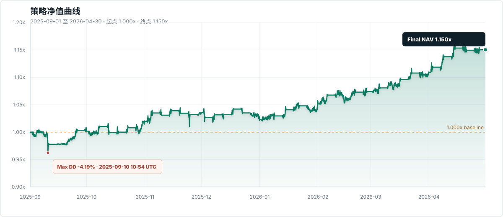

PUBLIC PERFORMANCE DASHBOARD
数字资产相对强弱策略 · 公开观察面板
本页面仅保留策略表现和风险摘要，用于协作者和潜在出资人快速查看。研究代码、因子细节、交易规则、数据路径和复现命令不在公开页披露。
累计收益
+15.04%
2025-09 至 2026-04
净值
1.150x
起点 1.000x
年化波动
8.64%
完整观察期
最大回撤
-4.19%
权益曲线口径
净值曲线更新
观察期：2025-09-01 至 2026-04-30。终点净值 1.150x。
月度月度表现摘要
8 个观察月份，7 个正收益月份，最终无持仓暴露。
快速入口
净值曲线

月度表现
| 月份 | 收益 | 最大回撤 | 状态 |
|---|---|---|---|
| 2025-09 | +0.18% | -4.19% | 完成 |
| 2025-10 | +1.75% | -2.01% | 完成 |
| 2025-11 | +1.60% | -3.32% | 完成 |
| 2025-12 | -1.24% | -2.36% | 完成 |
| 2026-01 | +2.81% | -1.67% | 完成 |
| 2026-02 | +2.15% | -2.19% | 完成 |
| 2026-03 | +3.27% | -1.51% | 完成 |
| 2026-04 | +3.72% | -1.62% | 完成 |
观察摘要
策略在观察期内累计收益 +15.04%，年化波动 8.64%，最大回撤 -4.19%。
无公开代码无交易规则无数据路径无持仓明细
关于这个公开页
页面定位：策略表现展示面板。公开内容仅包括净值、收益、波动、回撤、月度表现和风险提示。
不公开内容：研究代码、因子定义、参数、交易规则、数据目录、复现命令、逐币种候选、持仓和订单明细。
风险提示：历史回测和内部复现不代表未来收益。本页面不是自动交易系统，也不构成投资建议。